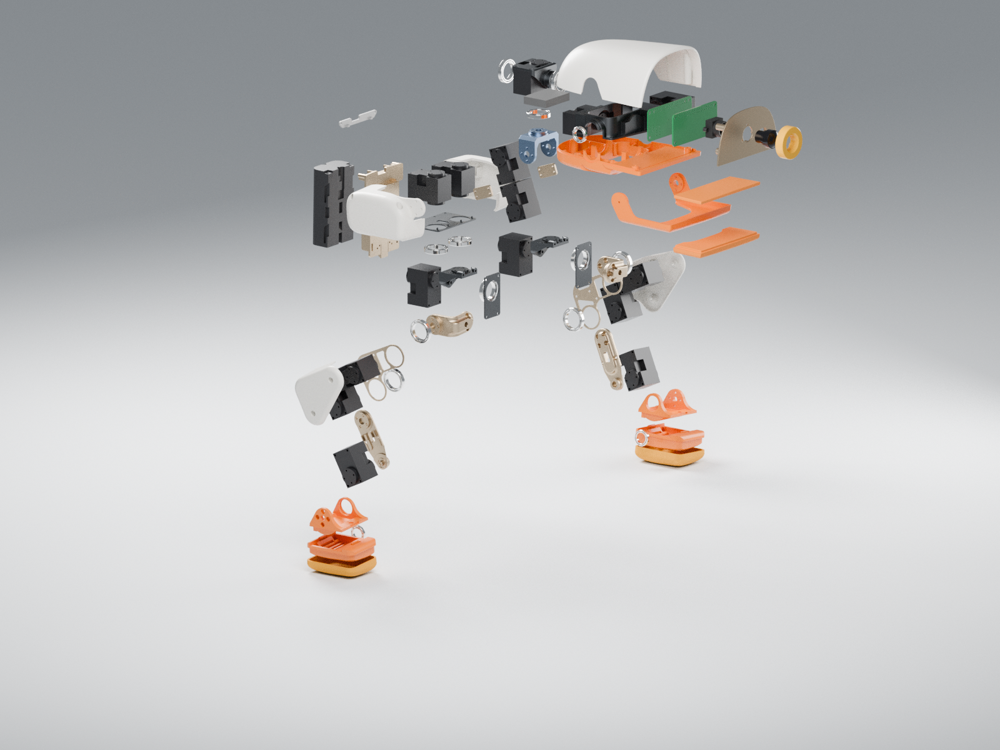

SELF-PACED WORKSHOP
认识 Microduck 的机械结构
先把外壳、关节、执行器和传感器分开理解，再看它们如何组成一台可控制的机器人。
从整体到组件
Microduck 是一台小型双足机器人。双腿承担支撑与移动，颈部机构调整视线，机身容纳计算、电源和连接部件。外观网格描述“看起来是什么样”，关节与碰撞模型描述“允许怎样运动和接触”。这两类数据在仿真中承担不同职责。

左键拖动旋转，滚轮缩放；也可使用下方组件列表。
操作：先把展开滑块移到中间，找到左右腿的舵机；再完全展开，选择头部镜头、外壳与主板。最后复位，观察这些部件如何通过连接件构成运动链。

先分清零件、关节和自由度
拿起一支笔绕笔尖转动，你可以同时改变三个方向；一个铰链却通常只允许绕一条固定轴旋转。机器人关节也有这样的约束。自由度描述需要多少个独立变量才能表示允许的运动，零件数量则描述装配由多少实体构成；两者不相等。网页中的 70 个组件不意味着策略有 70 个动作。
| 区域 | 活动关节 | 主要作用 |
|---|---|---|
| 每条腿 | 髋偏航、髋侧倾、髋俯仰、膝、踝，共 5 个 | 控制支撑与脚的位置 |
| 颈部与头部 | 颈俯仰、头俯仰、头偏航、头侧倾，共 4 个 | 改变相机朝向与头部姿态 |
| 喙部 | 实物有舵机；本课程策略不控制 | CAD 展示，不计入 14 维策略动作 |
选中一个髋部舵机，观察它的输出轴与附近轴承。舵机控制主动转角，轴承支撑旋转部件，支架把相邻关节连接起来。材料、形状与装配间隙都会影响运动。网页模型保留原 CAD 的细节，但没有模拟螺丝预紧、塑料弹性或线缆受力；它用于理解结构，而不是替代制造图纸。
软件如何让部件运动
- 1策略输出动作
- 2转换关节目标
- 3执行器产生力矩
- 4物理更新状态
- 5传感器提供新观测
策略并不直接移动机器人到指定位置。它输出一组动作，经动作接口变为关节目标。执行器依据目标与实际状态的差异产生力矩；机器人是否真的向前移动，还取决于接触、重力、惯量和摩擦。
本课程的控制循环为 50 Hz，物理步进为 200 Hz：每个策略动作保持四个物理步。齿隙模型还引入被动关节，描述传动中的间隙；这些被动关节不是额外的策略输出。
用坐标系描述运动
| 坐标系 | 你会在这里看到什么 |
|---|---|
| 世界坐标系 | 场地、球门和机器人整体位置 |
| 身体坐标系 | 前进、侧移、转向指令以及球相对身体的位置 |
| 相机坐标系 | 图像射线与检测目标方向 |
| 关节局部坐标系 | 一个关节的旋转轴与角度 |
检查理解
头部关节保持不动时，相机画面一定稳定吗？
查看解析
不一定。身体会俯仰和滚转，颈部也随身体运动。要判断取景稳定，需要观察相机相对世界的姿态，而不只是关节角度。
练习：沿一条受力路径找部件
先把模型保持在装配状态，找到左脚，再沿脚踝、小腿、膝部、大腿与髋部向上追踪。脚落地时，支撑力通过这条路径传到身体。现在展开模型，点选关节附近的舵机与支架，观察哪个部件固定在上一级，哪个部件随输出轴旋转。爆炸图只改变显示位置，不代表真实关节可移动到这些位置。
一个舵机既包含电机，也包含减速齿轮、位置反馈和控制电路。给定目标角度后，它需要时间追踪目标，受可用扭矩、速度、摩擦和齿隙限制。因此，“策略输出一个角度”与“关节立刻到达这个角度”是两回事。第二章会观察这个差别；第三章解释如何让策略适应它。
检查理解
在爆炸图中把脚部拉得更远，会改变仿真的腿长吗？
查看解析
不会。网页爆炸图用于认识组件；仿真中的长度和关节连接由机器人描述文件定义。